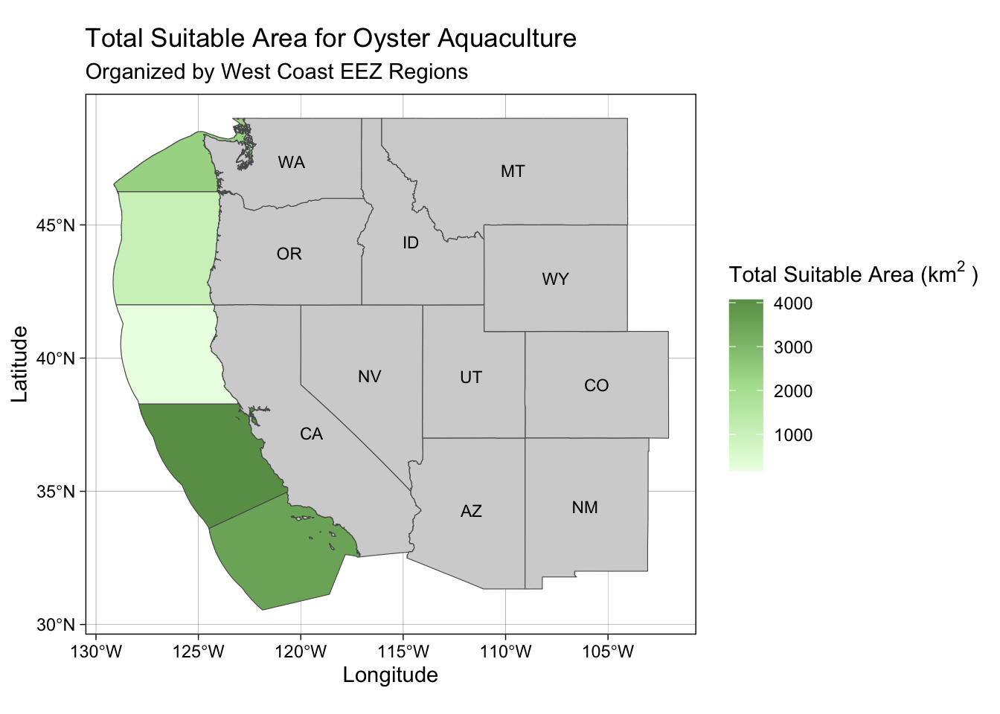
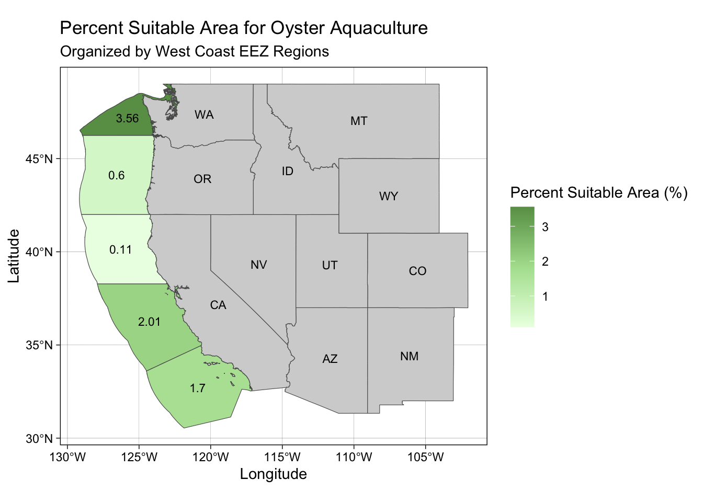
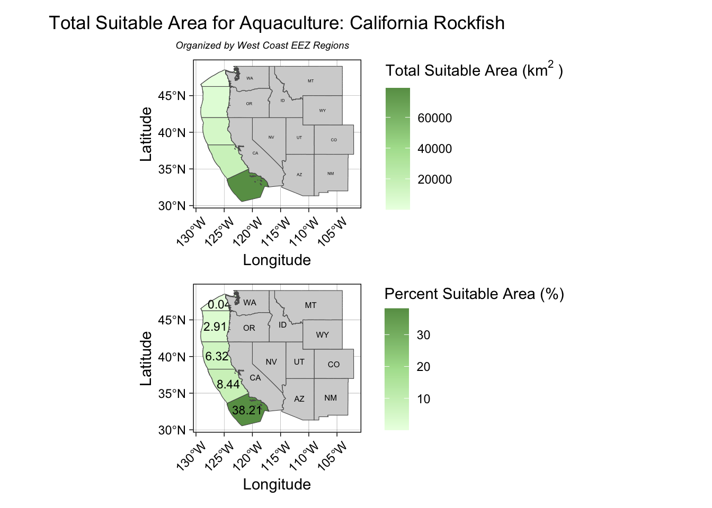

library(here)
library(tidyverse)
library(terra)
library(sf)
library(patchwork)Building species suitability maps for marine aquaculture plans
Finding optimal locations for marine aquaculture
Background
Scientists have projected that the human population will grow to 9.7 billion people by 2050 (Godfray et al. 2010). As the global population grows, global food demand continues to grow at the same rate. Agricultural expansion has been crucial to meeting this food demand; however, the impacts of agricultural intensification has been detrimental to our ecosystem (Tilman et al. 2011). Land clearing, fertilizer use, and greenhouse gas emissions via agricultural practices have contributed to species habitat loss, global warming, and the over-consumption and pollution of our water sources. It is imperative that we find new, sustainable ways to meet the food demand of a growing global population to mitigate disastrous downstream effects of current agricultural practices.
Marine aquaculture has the potential to be an important sustainable food source to meet global food demands, while limiting our carbon footprint and saving water (Gentry et al. 2017). As a cool example of the benefits of marine aquaculture, scientists are developing ways to farm seaweed to use as a food source for humans, a potential biofuel for energy generation, and an ingredient for cosmetic products (Kübler, Dudgeon, and Bush 2021) (Kraan 2010) (Couteau and Coiffard 2016). In addition to the versatile potential of seaweed, some species of seaweed can grow 1 foot per day under ideal conditions (Reed, Rassweiler, and Arkema 2008). That’s so cool to me! One thing you should know about me is that I LOVE seaweed. There are so many benefits to seaweed aquaculture, and perhaps one of the most advantageous aspects is that you don’t need to water seaweed. I could go on about seaweed for days, but the important takeaway here is that marine aquaculture has the potential to be an important path forward in finding sustainable ways to feed a growing population.
In order to build out the marine aquaculture industry, it is important to find suitable locations for the marine species that we plan to farm. The overarching goal of this project is to fill this need and create a reproducible workflow for identifying optimal locations for aquaculture.
Project Objectives
This project aims to do the following:
Find optimal locations for marine aquaculture using oysters as a model.
Find potential for marine aquaculture within each West Coast Exclusive Economic Zone.
Build a product that outputs a species suitability map by West Coast EEZs when users input a species name, suitable temperature range, and suitable depth range of a particular species.
Data Details
| Data type | Source |
|---|---|
| Sea Surface Temperature | I will use average annual sea surface temperature (SST) from the years 2008 to 2012 to characterize the average sea surface temperature within the region. The data I am working with was originally generated from NOAA’s 5km Daily Global Satellite Sea Surface Temperature Anomaly v3.1. |
| Bathymetry (Depth) | To characterize the depth of the ocean, I will use the General Bathymetric Chart of the Oceans (GEBCO).1 |
| Exclusive Economic Zones | I will be designating maritime boundaries using Exclusive Economic Zones off of the west coast of US from Marineregions.org. |
Method
This section will show the steps I took to complete the objectives above. In additions to the steps I outline below, I always build in checkpoints along the way to make the debugging process easier when I apply this workflow to other projects. These checkpoints are hidden, but I’m happy to share how I build in these checkpoints.
Preparing the data
To start, I’ll need to load all the necessary packages and read in our data.
# read in west coast eez shapefile
wc_eez <- st_read("/Users/katle/Desktop/Desktop - kat’s MacBook Air/github/species-habitability-maps/data/wc_regions_clean.shp")
# create list of files
sst_list <- list.files(here("/Users/katle/Desktop/Desktop - kat’s MacBook Air/github/species-habitability-maps/data/"), pattern = "average*", full.names = TRUE)
# read in landsat data from 2008-2012 as a raster stack and project it into 4326
all_sst <- rast(here(sst_list)) %>%
project("EPSG:4326")
# clean column names
names(all_sst) = c("SST_2008", "SST_2009", "SST_2010", "SST_2011", "SST_2012")
# read in bathymetry data
bathymetry <- rast("/Users/katle/Desktop/Desktop - kat’s MacBook Air/github/species-habitability-maps/data/depth.tif")Processing Data
Now that we have our West Coast EEZ regions, SST, and depth data loaded, we can begin to process the data. I’ll need to convert the temperature to Celsius, crop the data, and resample so that we have matching resolutions.
# find the mean sst from 2008-2012 then convert from kelvin to celsius
mean_sst_celsius <- terra::app(all_sst, mean) - 273.15
# crop bathymetry data to include area covered in mean_sst_celsius
bathymetry_cropped <- terra::crop(bathymetry, mean_sst_celsius)
# resample depth data to match resolution of all_sst using nearest neighbors approach
bathymetry_cropped <- terra::resample(bathymetry_cropped, mean_sst_celsius, method = 'near')Finding suitable locations
In order to find suitable locations for marine aquaculture, I’ll need to find locations that are suitable in terms of both SST and depth. The first step is to create two reclassification matrices for SST and depth, where I assign a value of 1 to suitable cells and NA to unsuitable cells. Then I’ll reclassify both rasters.
##### sst reclassification
# create reclassification matrix that assigns 1 to suitable values and NA to unsuitable values
temp_rcl <- matrix(c(-Inf, 11, NA,
11, 30, 1,
30 , Inf, NA),
ncol = 3, byrow = TRUE)
# re-classify mean_sst with matrix above
mean_sst_reclassified <- classify(mean_sst_celsius, rcl = temp_rcl)
##### depth reclassification
# create reclassification matrix for bathymetry data
depth_rcl <- matrix(c(-Inf, -70, NA,
-70, 0, 1,
0, Inf, NA),
ncol = 3, byrow = TRUE)
# re-classify bathymetry_cropped with matrix above
depth_reclassified <- classify(bathymetry_cropped, rcl = depth_rcl)Now, I’ll create a basic function that will multiple two objects. In this case, I will be multiplying the SST and depth rasters. This will return a single raster with cells that have 1 where SST and depth conditions are suitable, and NAs where they are not suitable.
# create a function to return 1 where mean_sst_reclassified and depth_reclassified are both in suitable conditions
suitability_fun <- function(sst, depth) {
return(sst*depth)
}
# apply function to oyster suitability raster stack
oyster_suitability <- lapp(c(mean_sst_reclassified, depth_reclassified), fun = suitability_fun)Determining the most suitable West Coast EEZ
In this next step, I want to calculate the total suitable area within each west coast EEZ in order to rank zones by priority. Then I will calculate the percent suitable area as well for reference.
# rasterize wc_eez
wc_rasterized <- rasterize(wc_eez, oyster_suitability, field = 'rgn')
# compute total suitable area
total_suitable_area <- terra::expanse(oyster_suitability,
unit = "km",
zone = wc_rasterized,
transform = TRUE)
# find percent suitable area
percentage_suitable_area <- left_join(wc_eez, total_suitable_area,
by = c("rgn" = "zone")) %>%
mutate(percent_suitable_area = (area / area_km2) * 100)Visualizing results
Now, I will create maps of both total suitable area and percent suitable area for oysters by west coast EEZ regions. For aesthetics, I include a base map of all western US states. All my maps are made using the R package, ggplot2.
This is the map for total suitable area:
# load in us state boundaries for aesthetics
us_states <- st_read("/Users/katle/Desktop/Desktop - kat’s MacBook Air/github/species-habitability-maps/data/US_State_Boundaries/US_State_Boundaries.shp") %>%
st_transform(crs = st_crs(percentage_suitable_area)) %>%
filter(STATE_ABBR %in% c("CA", "OR", "WA", "NV", "ID", "AZ", "MT", "UT", "WY", "CO", "NM"))
# create total area suitability map
total_suitability_map <- ggplot() +
geom_sf(data = percentage_suitable_area, aes(fill = area)) +
geom_sf(data = us_states, fill = "lightgrey") +
geom_sf_text(data = st_centroid(us_states), aes(label = STATE_ABBR),
size = 3, color = "black") +
theme_linedraw() +
scale_fill_gradientn(colours = c("#ebffe4", "#afe09d", "#689d55")) +
labs(title = "Total Suitable Area for Oyster Aquaculture",
subtitle = "Organized by West Coast EEZ Regions",
fill = bquote("Total Suitable Area (km"^{2}~")"),
x = "Longitude",
y = "Latitude")
total_suitability_map
This is the map for percent suitable area:
# create percent suitability map
percent_suitability_map <- ggplot() +
geom_sf(data = percentage_suitable_area, aes(fill = percent_suitable_area)) +
geom_sf_text(data = st_centroid(percentage_suitable_area),
aes(label = round(percent_suitable_area, 2)),
size = 3, color = "black") +
geom_sf(data = us_states, fill = "lightgrey") +
geom_sf_text(data = st_centroid(us_states), aes(label = STATE_ABBR),
size = 3, color = "black") +
theme_linedraw() +
scale_fill_gradientn(colours = c("#ebffe4", "#afe09d", "#689d55")) +
labs(title = "Percent Suitable Area for Oyster Aquaculture",
subtitle = "Organized by West Coast EEZ Regions",
fill = "Percent Suitable Area (%)",
x = "Longitude",
y = "Latitude")
percent_suitability_map
Building a function to apply this workflow to other species
This is the part that I’m most excited about! Using the steps I laid out above, I’m building a reproducible workflow. I created a function that will take in a species name, the suitable temperature range, and the suitable depth range. The function will output a map of both total suitable area and percent suitable area of the species that the user names. Then I stitch those maps together using the R package, patchwork. The result is a single plot with all of the information from above. Creating this function will help me reproduce the results for any species I want, which is a huge time-saver!
# creating function to apply to different species
species_suitability <- function(species, temp_min, temp_max, depth_min, depth_max) {
# create reclassification matrix that assigns 1 to suitable values and NA to unsuitable values
temp_rcl <- matrix(c(-Inf, temp_min, NA,
temp_min, temp_max, 1,
temp_max , Inf, NA),
ncol = 3, byrow = TRUE)
# re-classify mean_sst with matrix above
mean_sst_reclassified <- classify(mean_sst_celsius, rcl = temp_rcl)
# create reclassification matrix for bathymetry data
depth_rcl <- matrix(c(-Inf, depth_min, NA,
depth_min, depth_max, 1,
depth_max, Inf, NA),
ncol = 3, byrow = TRUE)
# re-classify bathymetry_cropped with matrix above
depth_reclassified <- classify(bathymetry_cropped, rcl = depth_rcl)
# create a function to return 1 where mean_sst_reclassified and depth_reclassified are both in suitable conditions
suitability_fun <- function(sst, depth) {
return(sst*depth)
}
# apply function to species suitability raster stack
suitability <- lapp(c(mean_sst_reclassified, depth_reclassified), fun = suitability_fun)
# rasterize wc_eez
wc_rasterized <- rasterize(wc_eez, suitability, field = 'rgn')
# compute total suitable area
total_suitable_area <- terra::expanse(suitability,
unit = "km",
zone = wc_rasterized,
transform = TRUE)
# find percent suitable area
percentage_suitable_area <- left_join(wc_eez, total_suitable_area,
by = c("rgn" = "zone")) %>%
mutate(percent_suitable_area = (area / area_km2) * 100)
# create total area suitability map
total_suitability_map <- ggplot() +
geom_sf(data = percentage_suitable_area, aes(fill = area)) +
geom_sf(data = us_states, fill = "lightgrey") +
geom_sf_text(data = st_centroid(us_states), aes(label = STATE_ABBR),
size = 1, color = "black") +
theme_linedraw() +
scale_fill_gradientn(colours = c("#ebffe4", "#afe09d", "#689d55")) +
labs(title = paste("Total Suitable Area for Aquaculture:", species),
subtitle = expression(italic("Organized by West Coast EEZ Regions")),
fill = bquote("Total Suitable Area (km"^{2}~")"),
x = "Longitude",
y = "Latitude") +
theme(plot.title = element_text(hjust = 0.5, vjust = 1),
plot.subtitle = element_text(hjust = 3.25, vjust = 0.5, size = 7),
axis.text.x = element_text(angle = 45, vjust = 0.75, hjust = 0.75))
# create percent suitability map
percent_suitability_map <- ggplot() +
geom_sf(data = percentage_suitable_area, aes(fill = percent_suitable_area)) +
geom_sf_text(data = st_centroid(percentage_suitable_area),
aes(label = round(percent_suitable_area, 2)),
size = 3, color = "black") +
geom_sf(data = us_states, fill = "lightgrey") +
geom_sf_text(data = st_centroid(us_states), aes(label = STATE_ABBR),
size = 2, color = "black") +
theme_linedraw() +
scale_fill_gradientn(colours = c("#ebffe4", "#afe09d", "#689d55")) +
labs(fill = "Percent Suitable Area (%)",
x = "Longitude",
y = "Latitude") +
theme(axis.text.x = element_text(angle = 45, vjust = 0.75, hjust = 0.75))
total_suitability_map / percent_suitability_map
}Finally, I’ll use the function I created to produce species suitability maps for California Rockfish.
# testing function!
species_suitability("California Rockfish", temp_min = 12.78, temp_max = 20, depth_min = -3000, depth_max = 0)
Conclusion
I really enjoyed building out this reproducible workflow for identifying suitable locations for marine aquaculture by species. I hope to continue building out this workflow and producing higher resolution maps for species suitability. Check back later to see what I’m cooking up in the geospatial kitchen!
Literature Cited
Couteau, C., and L. Coiffard. 2016. “Seaweed Application in Cosmetics.” In, 423–41. Elsevier. https://doi.org/10.1016/b978-0-12-802772-1.00014-2.
Gentry, Rebecca R., Halley E. Froehlich, Dietmar Grimm, Peter Kareiva, Michael Parke, Michael Rust, Steven D. Gaines, and Benjamin S. Halpern. 2017. “Mapping the Global Potential for Marine Aquaculture.” Nature Ecology & Evolution 1 (9): 1317–24. https://doi.org/10.1038/s41559-017-0257-9.
Godfray, H. Charles J., John R. Beddington, Ian R. Crute, Lawrence Haddad, David Lawrence, James F. Muir, Jules Pretty, Sherman Robinson, Sandy M. Thomas, and Camilla Toulmin. 2010. “Food Security: The Challenge of Feeding 9 Billion People.” Science 327 (5967): 812–18. https://doi.org/10.1126/science.1185383.
Kraan, Stefan. 2010. “Mass-Cultivation of Carbohydrate Rich Macroalgae, a Possible Solution for Sustainable Biofuel Production.” Mitigation and Adaptation Strategies for Global Change 18 (1): 27–46. https://doi.org/10.1007/s11027-010-9275-5.
Kübler, Janet E., Steven R. Dudgeon, and Douglas Bush. 2021. “Climate Change Challenges and Opportunities for Seaweed Aquaculture in California, the United States.” Journal of the World Aquaculture Society 52 (5): 1069–80. https://doi.org/10.1111/jwas.12794.
Reed, Daniel C., Andrew Rassweiler, and Katie K. Arkema. 2008. “BIOMASS RATHER THAN GROWTH RATE DETERMINES VARIATION IN NET PRIMARY PRODUCTION BY GIANT KELP.” Ecology 89 (9): 2493–2505. https://doi.org/10.1890/07-1106.1.
Tilman, David, Christian Balzer, Jason Hill, and Belinda L. Befort. 2011. “Global Food Demand and the Sustainable Intensification of Agriculture.” Proceedings of the National Academy of Sciences 108 (50): 20260–64. https://doi.org/10.1073/pnas.1116437108.
Footnotes
GEBCO Compilation Group (2022) GEBCO_2022 Grid (doi:10.5285/e0f0bb80-ab44-2739-e053-6c86abc0289c).↩︎